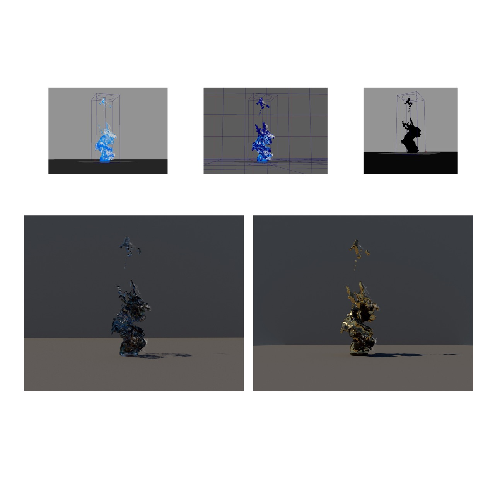
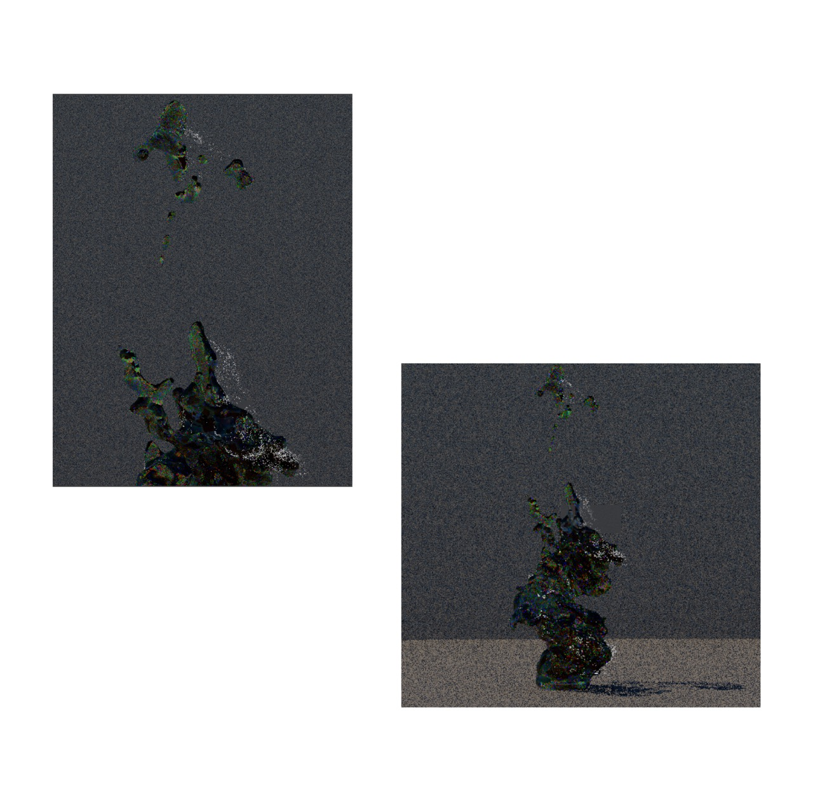
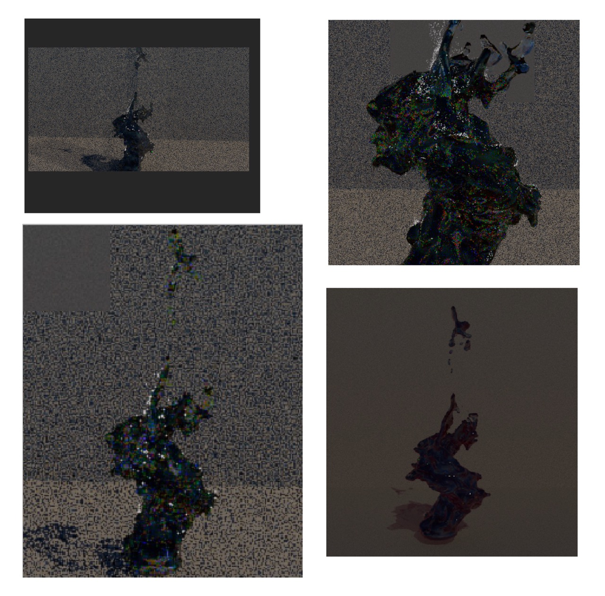
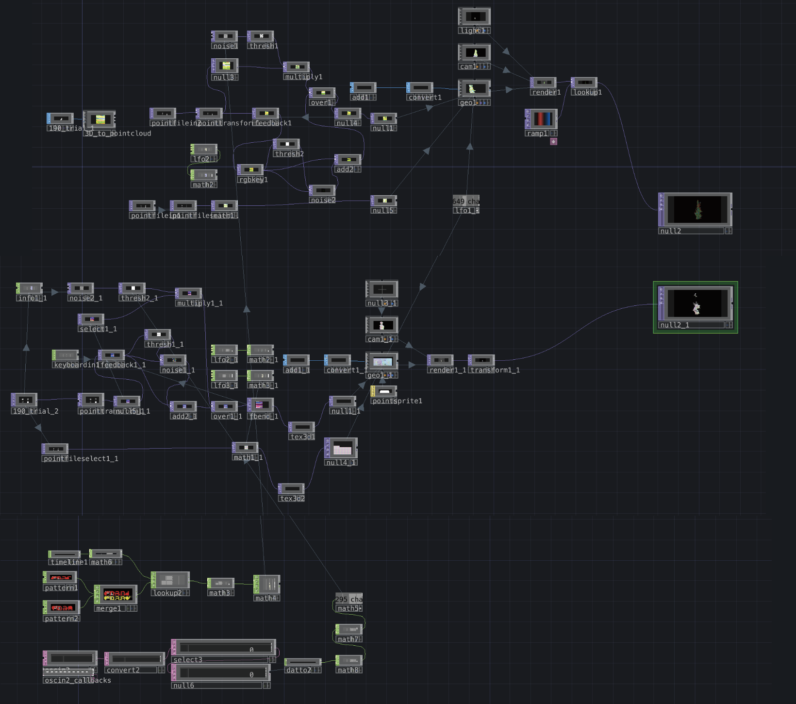
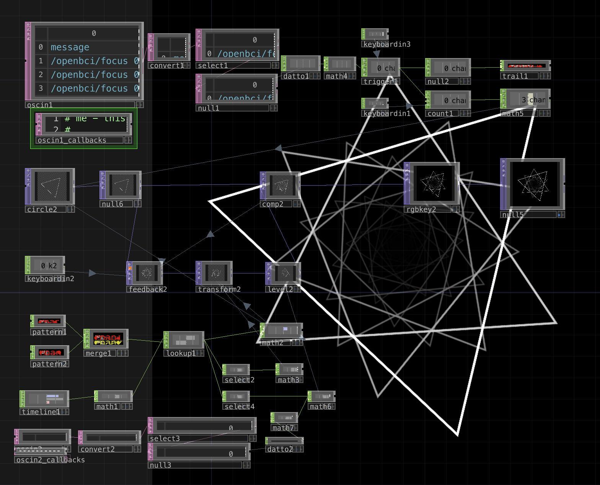
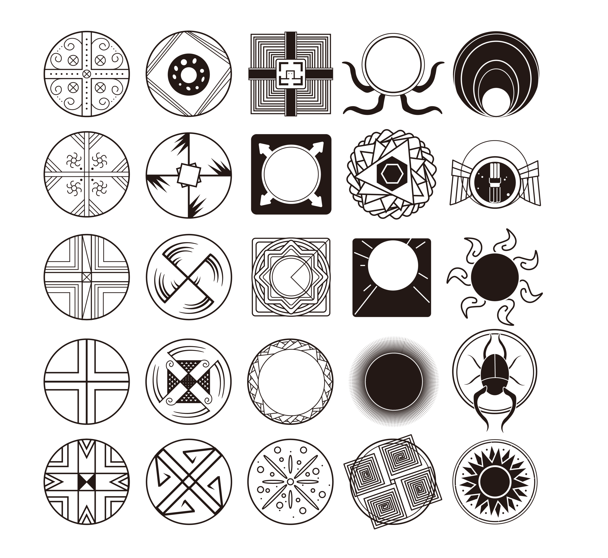
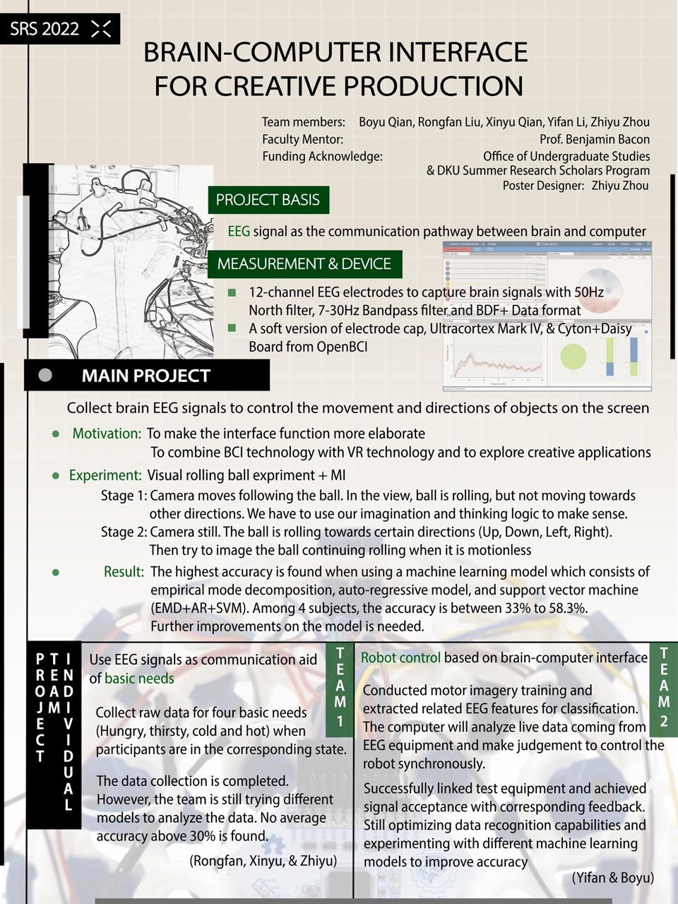
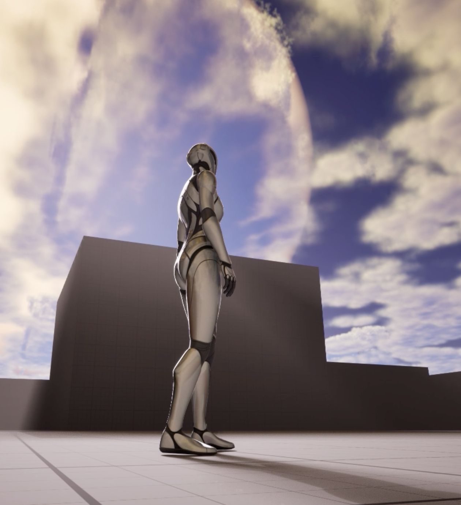
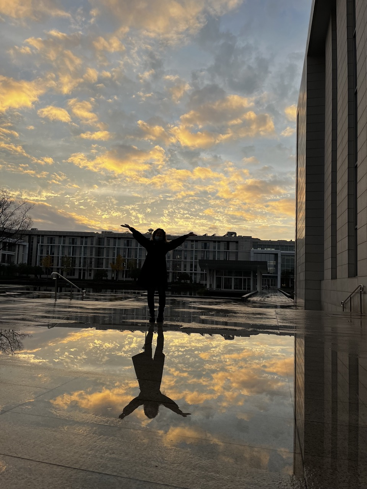

Zhiyu(Arya) Zhou
Following Works range from BCI-based experiments and interactive installations to digital drawings, 3D models, animations, and game design.


Fluidity
Fluidity is a series of artworks in the topic of the suppressed
emotions of women.
As a woman, particularly as an East Asian woman, I have consistently
felt and observed this nuanced atmosphere. The women in my life,
ranging from my grandmother to my friends, all show a certain
level of intricate restraint. We face the oppressive weight of
societal norms, endure gender exploitation, and are
expected to make sacrifices for the sake of family and fertility.
Consequently, our mental well-being carries an underlying element
of pathology, yet nearly all of us choose to bear it silently.
We refrain from emotional outbursts, prioritizing the care of
others' feelings, and assume a facade of normalcy out of apprehension
regarding societal scrutiny. It's a complex mixture of emotions — pain,
disappointment, anger, despair, all masked by the cover of calmness.
We are muted, fading away in silence. However, we are resilient;
within the slience and suppression, we extend open arms to embrace and protect
the things we love.
This series contains two artworks. One is a 3D-modeling work to show the suppressed emotions, named Frozen. The other work, Silent Scream is an interactive work to show the different expressions of emotions.
Frozen | Dynamic Tombstone
It is a dynamically growing 3D model. I chose several frames of the whole process, rendered them and did the post-processing. Their titles are: A Flash of Melancholy, Waving Goodbye, Frozen Embrace, Frozen Embrace: Noise, Cenotaph, and Twisted Memory.
3D Modeling & Rendering: Autodesk Maya
Post-processing: Adobe Photoshop






Silent Scream
It is an interactive artwork visualizing the emotions. I chose one model
in Frozen and tried two ways of expression in TouchDesigner.
The input is designed to be the user’s Electroencephalogram (EEG)
signals. They are the parameters in the transformation effect.
Data Collection & Input: OpenBCI GUI
Visualization: TouchDesigner
Silent Scream | Dissolution
Silent Scream | Dispersion
TouchDesigner: Here I used the OSC streaming data of EEG signals collected
by OpenBCI GUI as the input.
User's brainwave intensity will influence the
speed of the dissolution and dispersion effects of the models.
Keyboard input is also added to simulate the detection of changes
in EEG patterns in case the user does not have BCI equipment
at hand.

Meditation
Meditation is a series of interactive artworks related to brain-computer interaction (BCI) and more
general human-computer interaction (HCI).
It reflects my contemplation on the concept of "thinking."
Since the summer of 2022 when I started to know about BCI/HCI, I have been
curious about the connection between the physiological and spiritual dimensions of
"thinking." The term "thinking" seems to encompass various fields, from academic
disciplines like neuroscience, psychology and philosophy, to casual discussions in
everyday life. People have been interpreting, deconstructing, and thinking of
"thinking." And I also wish to contribute my own reflections.
This series contains artworks basically based on TouchDesigner, To Think, Neuro, Light House, and Fractal Garden.
To Think | The More We Think, The More...
This is an abstract piece that translates brainwave
activity into mathematical geometric shapes. Each instance of user
focus (thought) adds a new edge to the geometric shape,
and the central brightness and clarity of the shape increase
with the user's higher brainwave intensity. Ultimately, this
shape will approach a circle infinitely.
Due to the abstract nature of the work, it allows for multiple interpretations.
I personally offer two interpretations varying significantly.
One suggests that as we think more, our thoughts continually improve, approaching
the perfection of a circle. However, infinite proximity does not equate to
attainment; we can never reach perfection, so continuous thinking is necessary,
and the more we think, the more we gain.
The other interpretation suggests that as we think more, our ideas become more
complex, but overly complex thoughts
eventually become indistinguishable from zero (a circle). Therefore, the more we
think, the less we gain.
Hence, the answer to the question "The more we think, the
more we...?" is not singular, and I use "..." to represent it.
Everyone can attribute specific meaning to the "..." and I am also curious about others' interpretations.
Data Collection & Input: OpenBCI GUI
Visualization: TouchDesigner
Example:
TouchDesigner: Here I used the OSC streaming data of EEG signals collected
by OpenBCI GUI as the input.
User's brainwave activities and intensity will influence the
edge and the brightness of the geometric shape.
Keyboard input is also added to simulate the detection of changes
in EEG patterns in case the user does not have BCI equipment
at hand.

Neuro | Brain Activity Simulation
This is an interactive work that simulate brainwave
activity with mouse input. If the discharge of neurons
is considered as the rational, indifferent, and mechanized
interpretation of "thinking" in neuroscience — a deconstruction
of the concept of "thinking," then simulating neuronal discharge
with a machine represents the computer's rational, indifferent,
and mechanized interpretation of neuroscience — an additional
deconstruction of the deconstruction of "thinking."
As the user moves the mouse, the trajectory, speed, and dwell time of mouse
movement are recorded. Then, dots with varying intensities
visualize the movement trajectory based on the recorded speed and dwell time.
The recording concludes when the dwell time exceeds 5 seconds.
Data Input: Mouse Gestures
Visualization: TouchDesigner
Example:
TouchDesigner: Here I used the mouse gestures as the input.
The mouse gestures are mathematically transformed from uv into xyz for the visualization.
The trajectory, speed, and dwell time of mouse movement will influence
the intensity and the trajectory of the dot visualization.

Light House | Mind Wandering
This is a metaphorical art piece. I see meditation itself as
a light house. As you wander around the vast universe of your
thoughts, whether exploring or feeling lost, it offers you light.
You don't necessarily have to move directly towards it; you just know
it's there.
It uses mouse input to direct the movement of the particles.
This process is to simulate mind wandering.
Data Input: Mouse Gestures
Visualization: TouchDesigner
Example:
TouchDesigner: Here I used the mouse gestures as the input.
It uses mouse input to direct the movement of the particles.
As the user moves the mouse, particles will move and rotate towards
the direction of the mouse.

Fractal Garden | In the Universe of Nature and Mathematics
This is an interactive piece that combines CircuitPython with TouchDesigner to create a growing fractal tree. The fractal expands, twists, and breathes in response to temperature input, while a galaxy-like particle background also shifts according to real-time data.
I offer two main interpretations. One sees the work as a metaphor for human growth: as our inner state changes, our environment and connections also evolve, reflecting a balance of expansion and limitation. The other interpretation focuses on the tension between control and surrender: our body influences the fractal and galaxy, yet the patterns remind us that we are equally shaped by forces beyond ourselves.
Data Collection & Input: CircuitPython temperature sensor
Visualization: TouchDesigner
Example:

Interaction Demonstration:
Daydreaming
Daydreaming is a collection of digital
artworks exploring imagination, visual storytelling,
and creative experimentation across different media.
The series brings together digital illustrations,
graphic design, motion graphics, animation, and
augmented reality, reflecting an ongoing interest in
experimenting with visual forms and techniques.
Apple Head | A Glimpse of Alien Life
It is a 8 frame pixel animation.
A charming alien-head girl is showcasing a
moment from her life to you.
Tool used: Adobe Photoshop
Still Life Fantasy | Reimagining
It is a 3D-modeling work of still life.
We all know that traditional painting exercises emphasize still life.
But what does still life look like from the perspective of 3D modeling?
I tried to explore this by employing various camera angles, lighting techniques,
and rendering methods.
3D Modeling: Autodesk Maya
Post-processing: Adobe Photoshop


Finale | The Tragedy of Indifference
It is a pull-down-style comic with the topic of student suicide
phenomena in East Asia.
It is not a rare case to see the headlines report student suicides. Even in my
high school, there will be one or two students jumping off the building or overdosing
on sleeping pills every year. What makes it even more horrific is that people are
gradually regarding these incidents as normal. Instead of questioning the reason
behind student suicides, people just say ruefully: “another one”. All the tears
and sorrows, all the struggling and potentials, are compressed into a simple number,
“one”. So I make an attempt to explain the student suicide and fight against
this kind of indifference.
It is a short story showing a fleeting memory of a girl who committed suicide.
By the illustration of the girl and her delusional self, the factors behind her
suicide are implied. Also, in this comic, I tried to discuss the uncanny space of home
and school, which are the two places where we students spend most of our time in.
Love from family members and friendship with schoolmates are sacred. We tend to be
comfortable and relaxed if we fit in well. While it will be extremely painful if we
feel excluded and be outsiders to the places we should familiar with.
Hand drawing
Post-processing: Adobe Illustrator

View the PDF file (May wait for a while): Finale
Mapping Light: Tide | Wander Between Reality and Reflection
This artwork explores the relationship between digital imagery and physical
space through projection mapping.
I created two animated scenes in Blender visualizing the cyclical beauty of
sunrise and sunset over the ocean, and projected them onto a physical surface.
Two parallel scenes—day and night—mirror one another through variations in color, depth, and motion.
The daytime scene drifts gently on calm waves, while the night scene conveys a quiet unease,
as if sinking beneath the surface. Together, they evoke the emotional rhythm between serenity and
disquiet, capturing the fluid boundary between imagination and reality.
Visualization: Blender + TouchDesigner
Audio: Dual soundscapes — natural and slowed seagull calls
Original Animation (Blender):
Final Projection Mapping:
Self-Portrait | Melancholy & Dissociation
This motion self-portrait explores a drifting sense of identity and emotional
distance. Fragments of the face slip between frames as if out of sync with
the body, evoking a quiet melancholy and a dissociative state. Subtle glitches,
time shifts, and layered textures stage a self that is seen, refracted, and momentarily
lost.
Visualization: Adobe Photoshop + After Effects
Music: "The House in Fata Morgana OST - Everybody's Crying". Composed by Yüsuke Tsutsumi @ Novectacle
Way Down Hadestown | Digital Collage
A digital collage poster inspired by the musical Hadestown,
created using Adobe Photoshop. The composition combines industrial machinery,
tangled branches, skeletal imagery, and floral elements to evoke the atmosphere of
the underworld. Layered textures, muted tones, and contrasting
accents of red and warm light reflect the musical's themes
of love, death, and fate.
Tool used: Adobe Photoshop

Vision | Cosmic Mysticism
Vision is a motion graphics animation inspired by cosmic mysticism
and the intricate geometric patterns of Indian mandalas.
Created in Adobe After Effects, the animation transforms simple
circular shapes into increasingly elaborate, symmetrical patterns.
A palette of purples and a soundtrack drawing on Islamic musical
traditions contribute to a mysterious, meditative atmosphere,
bringing together visual and musical influences from different cultural
traditions.
Tool used: Adobe After Effects
Fascination | Allure
This motion graphics animation explores the allure of the
unknown through abstract forms and fluid movement.
Beginning with minimalist geometric symbols,
the composition gradually unfolds into swirling patterns
of red, blue, and muted tones. The interplay of shifting
shapes, contrasting colors, and rhythmic motion creates
an enigmatic atmosphere, evoking a sense of fascination
that remains open to interpretation.
Tool used: Adobe After Effects
Music: "淺嘗不止 INCESSANT SAVORING" by Steven Grove
Vivre à en crever | Beyond the Poster
Created as a course project for Graphic Design in Motion
at Duke, this augmented reality poster was designed for
Vivre à en crever, a song from the French musical Mozart, l'Opéra Rock.
The poster, designed in Adobe Illustrator, incorporates musical motifs,
flowing typography, and a stylized rose. I then created a
corresponding animation in Adobe After Effects and integrated
it with the poster using Artivive, allowing viewers to scan the
printed design with a mobile device and see the animation
overlaid on the physical poster.
Tool used: Adobe Illustrator, Adobe After Effects, Artivive
Music: "Vivre à en crever" - Mozart l'Opera Rock (standard)

Solar
Solar is a series of artworks with the theme of the sun.
It involves religious and cultural elements of
Shamanism in northern China, Buddhism in Tibet and
solar culture in Egypt and Janpan as well as
my personal impressions.
Thangka | The Wheel of Life, The Wheel of Sun
Thangka is a traditional form of painting in Tibet.
It is deeply influenced by Tibetan Buddhism and is
typically employed to depict scenes from the Buddhist context.
In this artwork, I began by hand-drawing Bhavachakra, the Wheel of Life,
including sketching and ontlining in gold. Following that, I performed
post-processing in Photoshop to enhance the circular elements.
Hand drawing: Sketch & Outline in gold
Post-processing: Adobe Photoshop


Fragments
It is a series of 25 icon/symbol desgins in topic of the sun.
These designs are influenced by Shamanic, Egyptian and Japanese cultures,
featuring patterns and symbols associated with the sun.
For example, I used scattered dots and divergent lines, which represent the sun
in Shamanism, Egyptian cultural elements like pyramids, scarabs, and talismans,
as well as Japanese symbols such as the three-legged crow and bronze mirrors.
Tool used: Adobe Illustrator

Slices of the Sun
This 3D extension of the Fragments series transforms 2D sun symbols
into spatial structures. Each model represents a “slice” of the sun,
composed of layered geometric forms that reinterpret traditional solar
symbols through the lens of digital fabrication.
Many of the shapes are inspired by depictions of the sun in Shamanic,
Egyptian, and Japanese cultures, while others are newly imagined to
express the act of dissection and reconstruction. The creative process
felt like anatomizing the sun—turning light and myth into tangible
specimens.
Tool used: Houdini

Solar Owl
Extending from the Fragments 3D series, this set of five models combines the
geometric “sun slices” with a scanned 3D owl model, creating hybrid forms
that merge symbolic representations of light and perception.
Each piece embodies the coexistence of illumination and observation—the sun
as the eternal source of energy, and the owl as its nocturnal witness.
Through layering, fusion, and reconstruction in Houdini.
Tool used: Houdini, 3D Scanner, 3D Printer


Rhythm of the Sun
This motion piece is a logo animation inspired by Manchu shamanic sun symbols. It combines geometric precision with rhythmic motion to convey the energy and sacredness of the sun. Through cyclical expansion, contraction, and pulsation, the animation translates the symbolic clarity of traditional motifs into a contemporary digital expression of solar vitality.
Tool used: Adobe Illustrator & After Effects
Divine Reflection | Panorama
This panoramic image merges natural and spiritual motifs into
a meditative landscape. A monumental figure emerges from the
trees, blending human, divine, and natural forms into a seamless
continuum.
By using equirectangular projection, the work invites viewers to step
into a 360° vision where the sacred and the organic coexist, suggesting
a cosmic reflection that transcends physical perspective.
Tool used: Adobe Photoshop & 360° panoramic rendering (equirectangular)

BCI Research & Application Projetcs
My research in brain-computer interfaces (BCIs)
began with undergraduate projects focused
on EEG signal processing, physiological state
classification, and interactive applications.
During my master's studies, I expanded this work through
theoretical research on non-invasive BCI and reciprocal
human-environment interaction, exploring how these technologies
might inform new approaches to interactive systems and
artistic practice.
Circular Causal Brain-Environment Interaction (2025-2026)
This independent study explores the potential of non-invasive
brain-computer interfaces (BCIs) for
reciprocal interaction between humans and their environments.
Drawing on research in BCI, circular causality, and second-order cybernetics,
it examines how brain activity and environmental
feedback might inform one another within interactive systems.
Through a literature review and conceptual mapping,
the study considers possible approaches to BCI-based
interaction and their implications for interactive art
and creative expression.
Research & Theoretical Exploration
This independent study examines circular causality as a
conceptual approach to brain-environment interaction.
Drawing on literature in second-order cybernetics, non-invasive
and passive BCI, neuroadaptive systems, and immersive interaction,
the research considers how an environment might respond to a
user's inferred state while also influencing their subsequent
perception and experience.
A central focus of the study is the distinction between
simple adaptive feedback and reciprocal interaction,
where the user and system continuously influence one another.
The research also examines the limitations of neural state
inference and the role of environmental feedback in shaping
interactive experiences.
Conceptual Framework
The first diagram illustrates the abstract structure of circular causal brain-environment interaction. It outlines five connected stages: sensing and input, state interpretation, control and adaptation, environmental write-back, and returned effects. Together, these stages describe a conceptual feedback loop in which changes to the environment may influence the user's subsequent state, becoming part of the next interaction cycle.

Figure 1. Abstract Structure of Circular Causal
Brain-Environment Interaction.
(Click on the figure to view the full-resolution
image in a new tab.)
Expanded Possibility Space
Building on the abstract framework, the second diagram maps a broader range of
possibilities identified through the literature review. It organizes
different sensing modalities, inferred cognitive and affective states,
adaptive strategies, environmental outputs, and potential experiential or
behavioral effects.
Rather than proposing a single implementation, this diagram illustrates
how different elements might be combined to explore circular causal
interaction across interactive systems and immersive environments.

Figure 2. Expanded Possibility Space of Circular Causal Brain-Environment Interaction.
(Click on the figure to view the full-resolution image in a new tab.)
Research Outcome & Material Documents
The independent study resulted in an extensive annotated literature review, a synthesis
memo, and two conceptual mapping diagrams. The project focused on theoretical exploration and
the synthesis of existing research rather than experimental implementation, providing
a conceptual foundation for future investigations of BCI-based interaction and artistic
practice:
Synthesis Memo — Toward Circular Causal Brain-Environment Interaction as an Interface Framework
A synthesis of the reviewed literature, examining the conceptual foundations, practical
considerations, and limitations of circular causal interaction.
Conceptual Mapping Diagrams
Two diagrams illustrating the abstract structure of the proposed framework and
its expanded design possibilities.
Annotated Literature Review
An extensive review of research on non-invasive BCI, second-order cybernetics,
neuroadaptive interaction, and immersive environments.
Click to expand and view in-page previews:
Synthesis Memo
Conceptual Mapping Diagrams
Annotated Literature Review
Brain-Computer Interface for Creative Production (Student Summer Research 2022)
This team-based research project explored the use of EEG and motor imagery
to classify imagined movement directions for potential applications in virtual
object control and interactive systems. Using OpenBCI equipment,
we designed visual training and testing scenarios, collected EEG data,
and experimented with signal processing and machine learning methods.
The project provided early practical experience in BCI experimentation and
highlighted the challenges of interpreting neural signals for interactive control.
My contributions included literature research,
experimental design, EEG data collection and preprocessing,
the preparation of presentation materials, and poster design.
Presentation Poster
Click on the figure to view the full-resolution image in a new tab.

Experiment Videos
Training Video
Visual cues used to guide participants during motor imagery training.
Testing Video
The still visual cues used to test imagined movement directions.
Experiment Demonstration
A short recording of the experiment process.
Team Presentation & Report
Click to expand and view in-page previews:
Team Presentation Slides
Team Research Report
EEG-Based Physiological State Classification (Undergraduate Signature Work 2024)
This team-based research project explored the use of EEG-based brain-computer interfaces
to identify five physiological states: normal, hunger, thirst, cold, and heat.
Motivated by the communication needs of individuals with severe physical disabilities,
we designed experiments using OpenBCI equipment and developed a classification model
based on the Conformer architecture.
The model achieved 91.9% training accuracy and 71.7% testing accuracy, demonstrating
the potential of EEG-based physiological state recognition while highlighting
challenges in model generalization.
My responsibilities included literature research on brain activity and
EEG-based classification, experimental design and implementation,
EEG data collection and preprocessing, and collaboration on model development,
training, and evaluation.
Presentation Poster
Final research poster presenting the experimental design, EEG analysis,
classification results, and reflections.
(Click on the figure to view the full-resolution image in a new tab.)

Individual Presentation Video & Slides
A recorded presentation video explaining the research motivation, experimental
methods, data analysis, and findings.
Click to expand and view in-page previews:
Presentation Slides
Presentation Video
Game Design Project
The Town That Sleeps is a Lovecraftian psychological horror
game project exploring the fear of the unknown, the cognitive burden of
understanding, and the transformation that comes from confronting unsettling
truths.
The project grew out of my interest in psychological and cosmic horror,
particularly themes of identity, alienation, and existential uncertainty.
The Town That Sleeps
The Town That Sleeps explores how psychological horror can be expressed
through environmental storytelling, perceptual distortion, and interactive exploration
rather than conventional combat or jump scares.
Originally conceived as a large-scale exploration experience set in a mysterious seaside
town, the project uses exploration, environmental storytelling, and a Sanity system to
shape the player's experience. Changes in Sanity influence the environment, available
interactions, and audiovisual feedback, allowing players to encounter different aspects
of the town as they explore.
My current design is scaled down, evolved into a playable prototype centered on a single plaza.
This condensed version focuses on a Sanity system that influences environmental
feedback, available interactions, and access to certain spaces, translating aspects
of the original vision into a smaller interactive experience.
Developed independently in Unreal Engine 5 as my master's thesis project in Digital Art History / Computational Media
at Duke University, The Town That Sleeps brings together narrative worldbuilding,
game design, and experimental approaches to perception and player interaction.

Master's Thesis: Prototyping Lovecraftian Psychological Horror in a Video Game (2026)
This thesis documents the research, design process, and development of The Town That Sleeps,
exploring how Lovecraftian horror can be translated into interactive game experiences through
environmental storytelling, exploration, and gameplay mechanics.
Read the full master's thesis on a new tab: DukeSpace
Thesis Presentation Slides (Click to expand and view in-page previews):
Thesis Presentation Slides
Game Trailer
A short trailer introducing the atmosphere, visual style, and psychological horror elements of The Town That Sleeps.
Gameplay Demonstration
A narrated walkthrough of the completed MA thesis prototype, showcasing its core gameplay mechanics, Sanity system, environmental transformations, and interactive elements.
Design Insights
Through developing The Town That Sleeps, I explored how uncertainty can be embedded
in gameplay mechanics rather than conveyed solely through narrative.
By connecting the Sanity system to environmental changes and available interactions,
the project demonstrates a design approach in which perception shapes how players
explore and interpret the game world.
The development process also highlighted a central tension in Lovecraftian horror:
gaining knowledge does not necessarily bring greater control or security. Instead,
discovering more about the environment can coincide with increasing instability and uncertainty.
Design Insights & Future Directions
Through the development of The Town That Sleeps, I explored how uncertainty and perception could
become integral parts of interactive storytelling. The project approaches psychological horror
through interpretive instability while preserving player agency. Rather than treating sanity
as a punishment mechanism, I designed it as a perceptual and interpretive variable through which
players could discover additional layers of the world while facing an increasing cognitive burden.
Perceiving more does not necessarily lead to greater understanding or certainty.
The current prototype establishes this concept primarily through audiovisual and environmental modulation.
In future iterations, I hope to extend it into deeper cognitive and narrative structures, where
additional information introduces contradictions, reshapes previous interpretations, and influences
narrative progression.
I am also interested in exploring hallucinatory interaction, in which perceptual instability extends
beyond audiovisual representation to the relationship between actions and their consequences.
Another direction is to reduce reliance on conventional on-screen interfaces by embedding system
feedback into spatial and sensory cues, allowing the interface itself to become part of the
perceptual experience.
Design & Development Documents
The following materials document the annotated literature review, creative research,
narrative development, and design process behind The Town That Sleeps,
from early concepts to the current prototype.
Annotated Literature Review
A collection of research notes and scholarly references informing the project's exploration of Lovecraftian horror,
psychological tension, and interactive storytelling.
Game Design Document
An overview of the game's core concepts, gameplay mechanics, narrative structure, and design goals.
World Building Document
A collection of background materials exploring the fictional setting, its atmosphere, and the narrative
foundations of the game world.
Game Development Process (by October 2025)
An early development record documenting the project's progress, design decisions,
and implementation in Unreal Engine 5.
Click to expand and view in-page previews:
Annotated Literature Review
Game Design Document
World Building
Game Development Process (by Oct 2025)
And some related creative work (just for fun).
Character Write-up
Character development notes outlining the identities, backgrounds, and
narrative roles of characters within the game.
Flash Fiction Story
A short piece of creative writing in the perspective of one character, reflecting the game's atmospher.
Interactive Text Game
An early HTML-based interactive narrative prototype exploring the game's opening sequence through
text and player choices.
Click to expand and view in-page previews:
Character Write-up
Flash Fiction Story
Interactive Text HTML Game: Opening Sequence of The Town That Sleeps
About Me
I am Zhiyu(Arya) Zhou, an interdisciplinary researcher and digital media artist
with a background in applied mathematics and computational media. I received my B.S.
in Applied Mathematics from Duke Kunshan University in 2024 and
my M.A. in Digital Art History / Computational Media from Duke University in 2026.
My research interests lie at the intersection of brain-computer interfaces (BCIs), interactive art,
and immersive experiences. I am particularly interested in how computational technologies can enable
reciprocal interaction between humans and their environments, open new possibilities for artistic
expression, and make creative experiences more accessible.
I explore the relationships between technology, perception, cognition, and human experience through both theoretical
research and artistic experimentation. My creative practice spans interactive installations, generative art, digital illustration, 3D modeling,
motion graphics, and game design. Through both theoretical research and artistic experimentation. And I'm willing to learn more.
